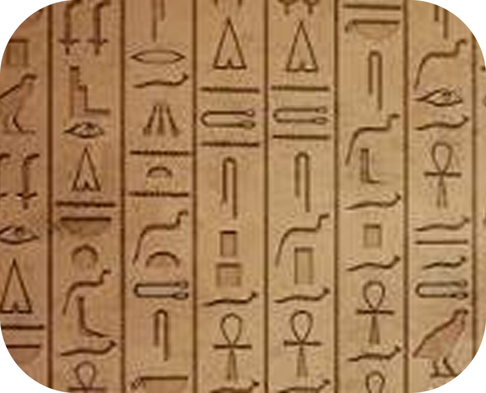

Como os humanos se comunicavam antes da escrita?

Comunicavam-se principalmente por meio de gestos, expressões faciais, sons e grunhidos. Usavam a linguagem facial, corporal e vocal para se comunicar entre si e para se expressar. Além disso utilizavam as pinturas rupestres para representar rotinas, sentimentos e suas crenças. A linguagem verbal que utilizamos hoje foi desenvolvida com o passar do tempo por conta dá necessidade de sobrevivência e cooperação.
Como surgiu a escrita

A escrita surgiu por volta de 3.300 a.C., na Mesopotâmia, desenvolvida pelos sumérios para atender à necessidade de registrar informações sobre comércio, impostos, produção agrícola e administração das cidades. Os primeiros registros eram feitos em tábuas de argila com um instrumento em forma de cunha, dando origem à escrita cuneiforme, considerada a primeira forma de escrita da humanidade.Inicialmente, utilizava desenhos que representavam objetos e quantidades, mas com
o tempo, esses símbolos evoluíram para representar sons e palavras, tornando a comunicação mais precisa. A invenção da escrita permitiu preservar conhecimentos, registrar leis, acontecimentos históricos e obras literárias, além de facilitar a organização das primeiras civilizações. Por isso, ela é considerada um dos maiores marcos da história, marcando o fim da Pré-História e o início da Idade Antiga.
Como a escrita mudou a história?
A escrita foi uma das maiores invenções da humanidade, pois transformou a forma como o conhecimento era preservado e transmitido. Surgida por volta de 3.300 a.C., ela permitiu registrar leis, histórias, descobertas e acontecimentos importantes, evitando que essas informações se perdessem com o tempo. Graças à escrita, as civilizações puderam se organizar melhor, desenvolver governos, criar leis, ampliar o comércio e compartilhar conhecimentos entre diferentes
povos e gerações. Além disso, ela se tornou uma importante ferramenta de cidadania e transformação social, permitindo que as pessoas se informassem, defendessem seus direitos e contribuíssem para o avanço da sociedade.